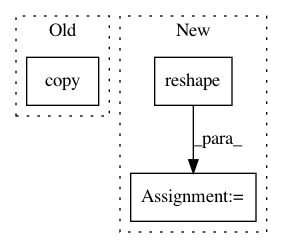

327ffc711693f1d0fe9ef6c40f086a33a9231019,chainer_chemistry/models/gat.py,GraphAttentionNetworks,update,#GraphAttentionNetworks#Any#Any#Any#,71
Before Change
h_i = functions.broadcast_to(h_i, (mb, atom, atom,
self.heads, self.hidden_dim))
device_id = cuda.get_device_from_array(h_i.array).id
h_j = functions.copy(h_i, device_id)
h_j = functions.transpose(h_j, (0, 2, 1, 3, 4))
// (minibatch, atom, atom, heads, out_dim * 2)
e = functions.concat([h_i, h_j], axis=4)
After Change
self.heads, self.hidden_dim))
// (minibatch, atom, 1, heads, out_dim)
h_j = functions.reshape(h, (mb, atom, 1, self.heads, self.hidden_dim))
// (minibatch, atom, atom, heads, out_dim)
h_j = functions.broadcast_to(h_j, (mb, atom, atom,
self.heads, self.hidden_dim))
In pattern: SUPERPATTERN
Frequency: 3
Non-data size: 3
Instances
Project Name: pfnet-research/chainer-chemistry
Commit Name: 327ffc711693f1d0fe9ef6c40f086a33a9231019
Time: 2018-08-19
Author: mottodora@gmail.com
File Name: chainer_chemistry/models/gat.py
Class Name: GraphAttentionNetworks
Method Name: update
Project Name: rtavenar/tslearn
Commit Name: 46cb0b5b2cf2d836a2cf96be95d4e25a4004675e
Time: 2018-10-22
Author: guillaume.androz@gmail.com
File Name: tslearn/clustering.py
Class Name: KShape
Method Name: _fit_one_init
Project Name: scikit-learn/scikit-learn
Commit Name: e52e9c8d7536b6315da655164951060642a52707
Time: 2019-09-18
Author: tom.dupre-la-tour@m4x.org
File Name: sklearn/manifold/tests/test_t_sne.py
Class Name:
Method Name: test_binary_perplexity_stability